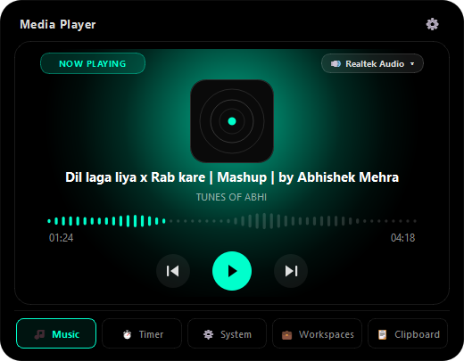
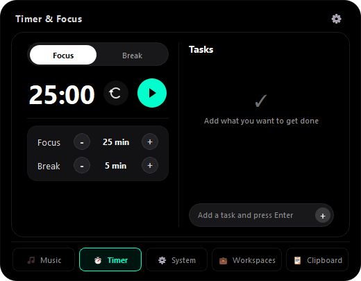
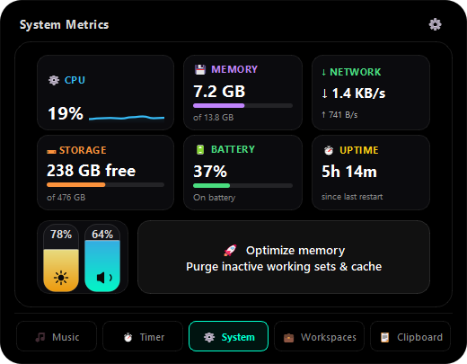
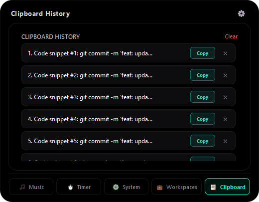

Zenith OS transforms the top of your Windows display into a fluid dynamic island. Equipped with Groq LLaMA 3.3 70B AI, Android 16 expressive media waveforms, smart workspace orchestration, and zero-latency hardware controls.
Zenith OS pairs the reasoning intelligence of Groq LLaMA 3.3 70B with a deterministic, zero-latency local fast-path engine. Experience instant sub-millisecond hardware execution combined with voice-guided desktop automation.
Common hardware actions like volume calibration, display brightness, desktop workspaces, and session locking execute immediately through native Win32, CoreAudio, and WMI kernel APIs. No network calls, no waiting, 100% offline reliability.
When you need creative problem-solving, code debugging, knowledge lookup, or complex desktop workflow automation, Zenith OS routes your prompt to Groq’s ultra-high-speed LPU infrastructure for instantaneous completion.
Press or hold Ctrl + Space anywhere in Windows to trigger voice listening. Zenith OS transcribes your spoken commands with high accuracy and speaks back with crisp, human-sounding speech synthesis.
Ctrl + Space)
Zenith OS stores user preferences, project notes, and custom reminders locally inside your user profile (~/.dynamic_island_settings.json). No telemetry, no third-party tracking, and no data profiling.
Stop hunting for open windows and re-arranging your displays. Snapshot entire desktop layouts into isolated workspaces and launch complete production setups with a single click or voice prompt.
Win32, UWP, and Microsoft Store apps mapped through canonical AUMID identifiers.
One click launches your complete development environment into focus.
Capture active desktop state instantly without manual configuration.
Automatically tracks running processes and eliminates clutter.
Every component inside Zenith OS is engineered from scratch for minimal overhead, pure black OLED aesthetics, and immediate responsiveness.
Zenith OS features a living, breathing vector robot companion built with a 60 FPS LERP physics engine. It expresses 16 unique moods, blinks naturally, glances around your screen, and reacts dynamically to speech, music, and system status.
Replaces conventional circular slider thumbs with a series of 48 vertically varying organic waveform bars. Lit with glowing played segments and muted dark-grey tracks. Fully seekable via dragging and clicking.

Seamless mode switching between Focus (25m) and Break (5m) with fine-grained stepper adjustments.
Features minimalist compact hover controls (⏸ Pause, ⏹ Stop, › Quick Actions).

Ultra-smooth vertical capsule sliders for Volume and Brightness with zero-snapback interaction lockout. Includes live CPU, RAM, Network, Storage, Battery, and Uptime telemetry.

Zero-overhead clipboard tracking keeping the last 10 copied snippets in clean card view. Click any item to copy back instantly to active Windows clipboard, or delete individual entries.

Morphs smoothly between Compact Idle Pill, Hover Controls Preview, and the Full Glass Dashboard. Features an organic idle audio wave that responds to music rhythmically and unobtrusively.
Get Zenith OS up and running on your Windows workstation in seconds with the official standalone installer — no Python or manual setup required.
Zenith OS is packaged into a single standalone Windows executable (~60.9 MB) with all GUI engines, speech synthesizers, and system drivers bundled:
Windows 10 or Windows 11 (64-bit)
Self-contained executable wizard
< 85 MB RAM & standard GPU acceleration
Double-click Zenith_OS_Setup.exe on your desktop or in your downloads folder to open the guided installer:
C:\Program Files\Zenith OS)..\Zenith_OS_Setup.exe /VERYSILENT /SUPPRESSMSGBOXES /NORESTARTLaunch Zenith OS from your Desktop shortcut or Start Menu. The dynamic island will anchor smoothly to the top of your display:
Master your workflow with zero-friction micro-interactions:
Inspect every view of Zenith OS rendered in native high-resolution OLED dark mode.
Performance metrics designed for gamers, developers, and power users who demand zero overhead.
| Parameter | Zenith OS | Conventional Overlays |
|---|---|---|
| Memory Usage (RAM) | < 85 MB (Aggressive auto-trim working set) | 350 MB - 1.2 GB (Electron/CEF bloat) |
| Animation Engine | 60 FPS Hardware-Accelerated (PyQt6 / QPainter) | Laggy DOM transitions / 30 FPS drops |
| Command Routing Latency | 0.0 ms (Deterministic Fast-Path) | 1500 - 3000 ms (Cloud-dependent) |
| AI Neural Model | Groq LLaMA 3.3 70B (Ultra-fast inference) | Generic slow chat API |
| Color Profile | Pure OLED #000000 (0% light leakage) | Standard washed-out dark gray |
| Operating System | Windows 10 / 11 64-bit | Cross-platform compromises |
Have questions, feature proposals, or want to collaborate on the future of desktop user interfaces? Reach out directly.
Fill out the form below to initiate direct correspondence.